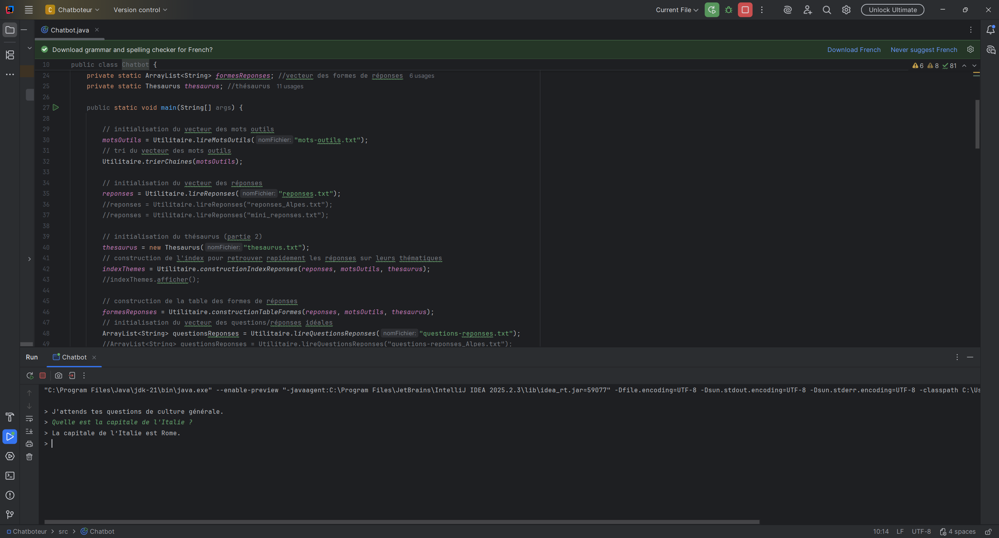
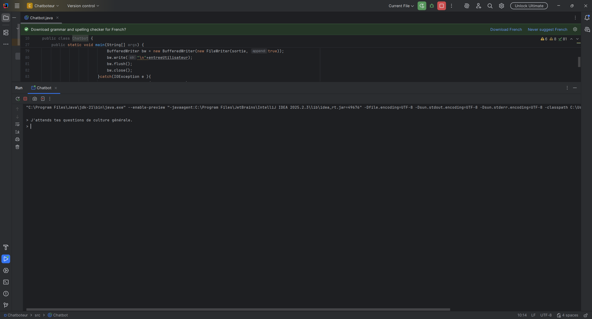
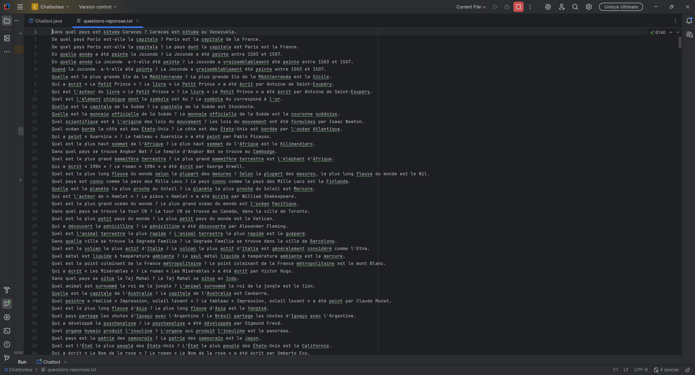
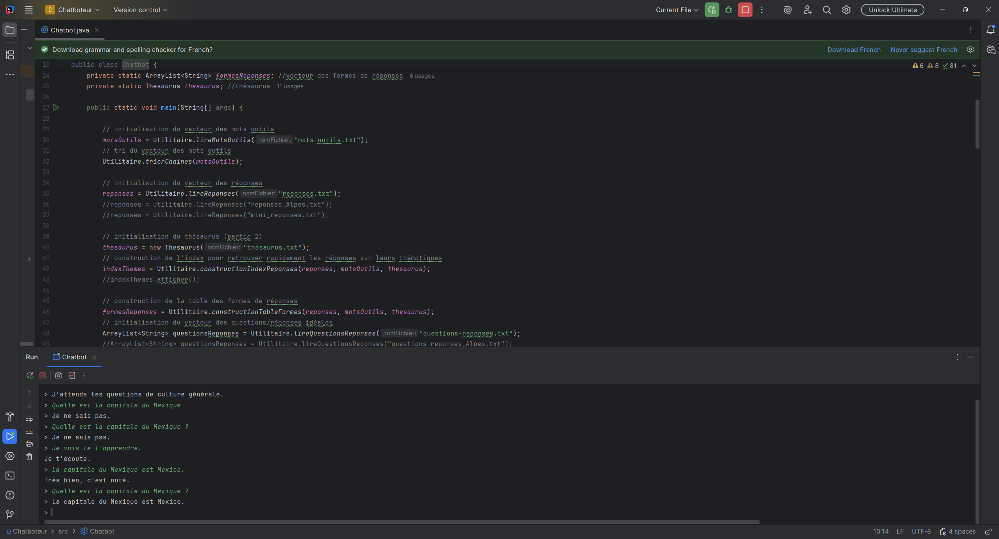

En première année de BUT informatique, j’ai du développer un chatbot simple pouvant répondre à des questions de culture G en se basant sur des fichiers structurés de questions/réponses. Le projet intègre également un système d’apprentissage permettant de rajouter de nouvelles questions et réponses auquelles le bot peut répondre.

Comprendre le fonctionnement basique d’un système conversationnel, Manipuler des données textuelles structurées, Développer une logique de traitement de questions-réponses, Concevoir un programme capable d’évoluer, Améliorer les compétences de travail en équipe.
Le projet a été réalisé en groupe de deux, ce qui a nécessité une répartition des tâches, une communication régulière et une coordination sur l’architecture du programme afin d’assurer la cohérence du développement.



Manipulation de fichiers et de données textuelles, Programmation algorithmique, Structures de données, Traitement de chaînes de caractères, Travail collaboratif, Tests et débogage.
Ce projet m’a permis d’acquérir des compétences en gestion et exploitation de données textuelles, en conception d’algorithmes simples de traitement du langage, ainsi qu’en structuration d’un programme modulaire. J’ai également développé mes capacités à travailler en équipe et à concevoir des systèmes capables d’évoluer grâce à l’ajout de nouvelles données.